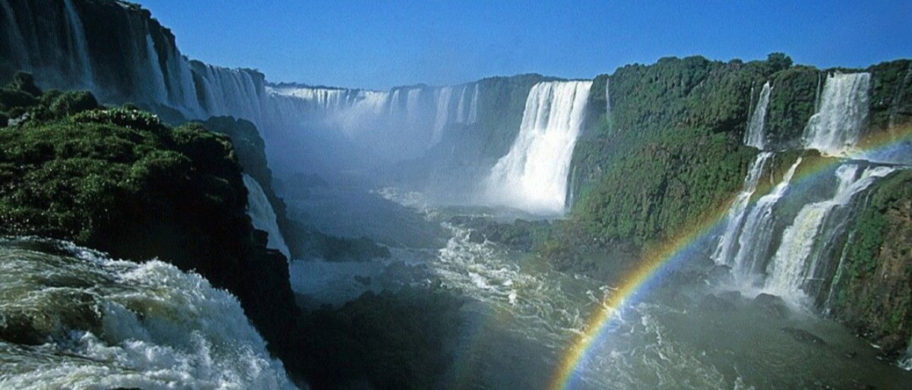

✪ For women, by women. ✪
Africa
Africa is famous for its beautiful sights and cities, unsurpassed natural wonders, dramatic coastline, amazing wildlife, luscious forests and unforgettable architecture. The continent has a unique culture and heritage and it is full of unbelievably wide-ranging and beautiful places to visit.
Dominican Republic of the Congo (DRC) (21) 2 STARS
Although it contains a diverse geography, with volcanic peaks rising over rainforests and misty clouds descending upon them, the country has suffered lots of tragedy and the presence of armed troops alongside the ongoing conflicts make the country a very dangerous place to go.
Traveling here is not encouraged. However, if you still choose to go, you must not leave your accommodation at night, avoid remote streets (day and night), do not flash your belongings or handle money in public, and follow all safety rules. You can find additional information on our safety information page.
